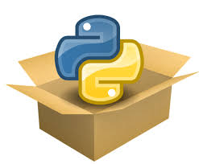

Organização de códigos e projetos em Python
book_2 Ambientes virtuais
book_2 Módulos e Pacotes
book_2 Boas Práticas
Ambientes virtuais são diretórios isolados que contêm uma instalação Python específica e suas próprias bibliotecas. Eles permitem que você trabalhe em diferentes projetos com dependências distintas sem conflitos.
# No Windows
python -m venv meu_ambiente
# No Linux/Mac
python3 -m venv meu_ambiente
# No Windows
meu_ambiente\Scripts\activate
# No Linux/Mac
source meu_ambiente/bin/activate
# Listar pacotes instalados
pip list
# Verificar se um pacote específico está instalado
pip show nome_do_pacote
# No Windows
meu_ambiente\Scripts\deactivate
# No Linux/Mac
deactivate
Objetivo: Crie um ambiente virtual chamado "projeto_teste", ative-o e verifique os pacotes instalados. Em seguida, desative o ambiente.
# Passo 1: Criar o ambiente virtual
python -m venv projeto_teste
# Passo 2: Ativar o ambiente
# No Windows:
projeto_teste\Scripts\activate
# No Linux/Mac:
source projeto_teste/bin/activate
# Passo 3: Verificar pacotes instalados
pip list
# Saída esperada: apenas pip e setuptools
# Passo 4: Desativar o ambiente
deactivate
Módulos são arquivos Python (.py) que contêm definições e comandos. Eles permitem organizar o código de forma modular e reutilizável.

Criar um módulo é simples: basta criar um arquivo .py com funções, classes ou variáveis.
# --- arquivo: calculadora.py -----
def somar(a, b):
return a + b
def subtrair(a, b):
return a - b
PI = 3.14159
# ---------------------------
# --- arquivo: main.py -----
import calculadora
resultado = calculadora.somar(5, 3)
print(resultado) # 8
print(calculadora.PI) # 3.14159
# ---------------------------
# Importar o módulo completo
import calculadora
# Importar funções específicas
from calculadora import somar, subtrair
# Importar com alias
import calculadora as calc
resultado = calc.somar(10, 5)
# Importar tudo (não recomendado)
from calculadora import *
Objetivo: Crie um módulo chamado "conversores.py" com duas funções: uma para converter Celsius para Fahrenheit e outra para converter quilômetros em milhas. Importe e teste as funções em outro arquivo.
# --- arquivo: conversores.py -----
def celsius_para_fahrenheit(celsius):
return (celsius * 9/5) + 32
def km_para_milhas(km):
return km * 0.621371
# ---------------------------
# --- arquivo: main.py -----
from conversores import celsius_para_fahrenheit, km_para_milhas
celsius = 25
fahrenheit = celsius_para_fahrenheit(celsius)
print(f"{celsius}°C é igual a {fahrenheit}°F")
km = 100
milhas = km_para_milhas(km)
print(f"{km} km é igual a {milhas} milhas")
# ---------------------------
Bibliotecas externas do Python são pacotes de código criados por desenvolvedores para estender a funcionalidade da linguagem e simplificar tarefas complexas. Elas são instaladas separadamente da biblioteca padrão do Python e podem ser gerenciadas pelo pip, o gerenciador de pacotes do Python.
Essas bibliotecas abrangem uma ampla gama de áreas, desde manipulação de dados, aprendizado de máquina, desenvolvimento web, automação, até visualização de dados e muito mais. O vasto ecossistema de bibliotecas externas é o que torna o Python tão versátil, permitindo que os desenvolvedores evitem "reinventar a roda" e construam soluções de forma mais rápida e eficiente.
import math
# Funções úteis
print(math.sqrt(16)) # Raiz quadrada: 4.0
print(math.pow(2, 3)) # Potência: 8.0
print(math.pi) # Constante PI: 3.141592...
print(math.ceil(4.3)) # Arredondar para cima: 5
print(math.floor(4.7)) # Arredondar para baixo: 4
print(math.factorial(5)) # Fatorial: 120
print(math.sin(math.pi/2)) # Seno: 1.0
print(math.log(10)) # Logaritmo natural: 2.302585092994046
import random
# Funções úteis
print(random.random()) # Número entre 0 e 1
print(random.randint(1, 10)) # Inteiro entre 1 e 10
print(random.uniform(1.5, 5.5)) # Float entre 1.5 e 5.5
print(random.choice(['a', 'b', 'c'])) # Escolhe um elemento aleatório
print(random.sample(range(1, 20), 5)) # Amostra de 5 números únicos
print(random.shuffle([1, 2, 3, 4, 5])) # Embaralha uma lista
from datetime import datetime, date, time, timedelta
# Data e hora atuais
agora = datetime.now()
print(agora)
print(agora.year, agora.month, agora.day)
print(agora.hour, agora.minute, agora.second)
# Criar datas específicas
natal = date(2025, 12, 25)
print(natal)
# Criar horários específicos
hora_especifica = time(14, 30, 45)
print(hora_especifica)
# Formatação de datas
print(agora.strftime("%d/%m/%Y")) # 24/10/2025
print(agora.strftime("%H:%M:%S")) # 14:30:45
# Operações com datas
amanha = agora + timedelta(days=1)
semana_passada = agora - timedelta(weeks=1)
print(amanha)
print(semana_passada)
# Converter string para data
data_string = "2025-10-24"
data_obj = datetime.strptime(data_string, "%Y-%m-%d")
import os
# Diretório atual
print(os.getcwd())
# Listar arquivos
print(os.listdir('.'))
# Criar diretório
os.makedirs('nova_pasta', exist_ok=True)
# Verificar se existe
print(os.path.exists('arquivo.txt'))
print(os.path.isfile('arquivo.txt'))
print(os.path.isdir('pasta'))
# Remover arquivo
os.remove('arquivo.txt')
# Remover diretório
os.rmdir('pasta_vazia')
# Informações do caminho
caminho = '/home/usuario/documento.txt'
print(os.path.basename(caminho)) # documento.txt
print(os.path.dirname(caminho)) # /home/usuario
print(os.path.splitext(caminho)) # ('/home/usuario/documento', '.txt')
# Juntar caminhos (compatível com qualquer SO)
novo_caminho = os.path.join('pasta', 'subpasta', 'arquivo.txt')
print(novo_caminho)
# Variáveis de ambiente
print(os.getenv('HOME')) # Linux/Mac
print(os.getenv('USERPROFILE')) # Windows
Objetivo: Crie um script que:
# Script demonstrando o uso das bibliotecas
# math, random, datetime e os.
import math
import random
from datetime import datetime, date
import os
print("="*60)
print("EXERCÍCIO: USO DE BIBLIOTECAS PYTHON")
print("="*60)
# 1. Calcular área do círculo usando math
raio = 5
area = math.pi * math.pow(raio, 2)
print(f"\n1. BIBLIOTECA MATH:")
print(f" Área do círculo com raio {raio}: {area:.2f} unidades²")
# 2. Simular lançamento de dado usando random
print(f"\n2. BIBLIOTECA RANDOM:")
print(f" Lançando um dado 5 vezes:")
for i in range(1, 6):
resultado = random.randint(1, 6)
print(f" Lançamento {i}: {resultado}")
# 3. Calcular dias até o final do ano usando datetime
hoje = date.today()
fim_do_ano = date(hoje.year, 12, 31)
dias_restantes = (fim_do_ano - hoje).days
print(f"\n3. BIBLIOTECA DATETIME:")
print(f" Data de hoje: {hoje.strftime('%d/%m/%Y')}")
print(f" Dias até o final do ano: {dias_restantes} dias")
# 4. Criar pasta usando os
pasta = "meus_arquivos"
print(f"\n4. BIBLIOTECA OS:")
if not os.path.exists(pasta):
os.makedirs(pasta)
print(f" ✓ Pasta '{pasta}' criada com sucesso!")
else:
print(f" ℹ Pasta '{pasta}' já existe.")
print(f"\n Caminho completo: {os.path.abspath(pasta)}")
print(f" Arquivos no diretório atual: {len(os.listdir('.'))} itens")
print("\n" + "="*60)
print("EXERCÍCIO CONCLUÍDO!")
print("="*60)
pip é o gerenciador de pacotes do Python, usado para instalar bibliotecas de terceiros do PyPI (Python Package Index).
# Instalar um pacote
pip install nome_do_pacote
# Instalar versão específica
pip install nome_do_pacote==1.2.3
# Atualizar um pacote
pip install --upgrade nome_do_pacote
# Desinstalar um pacote
pip uninstall nome_do_pacote
# Listar pacotes instalados
pip list
# Mostrar informações de um pacote
pip show nome_do_pacote
# Criar arquivo de requisitos
pip freeze > requirements.txt
# Cria um arquivo com todas as
# dependências do ambiente (útil
# pra clonar ambientes virtuais)
# Instalar a partir de requirements.txt
pip install -r requirements.txt
# Passo 1: Instalação ----------------------------
# Instalar colorama
pip install colorama
# Verificar instalação
pip show colorama
# Passo 2: Criar script (teste_cores.py) -----
from colorama import Fore, Back, Style, init
# Inicializar colorama
init(autoreset=True)
print("="*60)
print(Fore.CYAN + "DEMONSTRAÇÃO DA BIBLIOTECA COLORAMA")
print("="*60)
# Textos coloridos
print(f"\n{Fore.RED}Este texto está em vermelho")
print(f"{Fore.GREEN}Este texto está em verde")
print(f"{Fore.BLUE}Este texto está em azul")
print(f"{Fore.YELLOW}Este texto está em amarelo")
print(f"{Fore.MAGENTA}Este texto está em magenta")
# Textos com fundo colorido
print(f"\n{Back.RED}{Fore.WHITE}Texto branco com fundo vermelho")
print(f"{Back.GREEN}{Fore.BLACK}Texto preto com fundo verde")
print(f"{Back.YELLOW}{Fore.BLACK}Texto preto com fundo amarelo")
# Estilos
print(f"\n{Style.DIM}Texto com brilho reduzido")
print(f"{Style.NORMAL}Texto normal")
print(f"{Style.BRIGHT}Texto com brilho aumentado")
# Combinações
print(f"\n{Fore.WHITE}{Back.BLUE}{Style.BRIGHT}Destaque importante!")
print(f"{Fore.RED}{Style.BRIGHT}⚠ ATENÇÃO: Mensagem de alerta!")
print(f"{Fore.GREEN}{Style.BRIGHT}✓ Operação realizada com sucesso!")
print("\n" + "="*60)
# Passo 3: Gerar requirements.txt ----------------
# Gerar arquivo com todas as dependências
pip freeze > requirements.txt
# Ver conteúdo do arquivo
cat requirements.txt # Linux/Mac
type requirements.txt # Windows
# BOM - nomes descritivos e minúsculos
import processamento_dados
from utils import formatar_texto
# EVITAR - nomes genéricos ou confusos
import p
from x import *
# 1. Bibliotecas padrão
import os
import sys
from datetime import datetime
# 2. Bibliotecas de terceiros
import requests
import numpy as np
# 3. Módulos locais
from modulos import minhas_funcoes
from utils import helpers
# arquivo_a.py
from arquivo_b import funcao_b # EVITAR se arquivo_b importa arquivo_a
# Solução: reorganizar o código ou usar import dentro de funções
def minha_funcao():
from arquivo_b import funcao_b # ✓ Import local
return funcao_b()
# meu_modulo.py
def funcao_util():
return "Resultado"
# Código que só executa se o arquivo for executado diretamente
if __name__ == "__main__":
print("Testando o módulo...")
print(funcao_util())
"""
Módulo de processamento de dados.
Este módulo contém funções para limpar e transformar dados.
"""
def limpar_dados(dados):
"""
Remove valores nulos e duplicados.
Args:
dados (list): Lista de dados para limpar
Returns:
list: Dados limpos
"""
return list(set(filter(None, dados)))
# ✗ EVITAR - poluição do namespace
from math import *
# ✓ PREFERIR - explícito
from math import sqrt, pi
# ✓ OU
import math
Objetivo: Indique no código a seguir quais as boas práticas que podem ser aplicadas:
# arquivo_a.py
from arquivo_b import funcao_b
def funcao_a():
return funcao_b() * 2
print(funcao_a(5))
Objetivo: Criar um módulo chamado string_utils.py com quatro funções úteis para tratamento de strings e utilizá-lo em um script principal:
No script principal, importe o módulo e teste todas as funções com exemplos práticos.